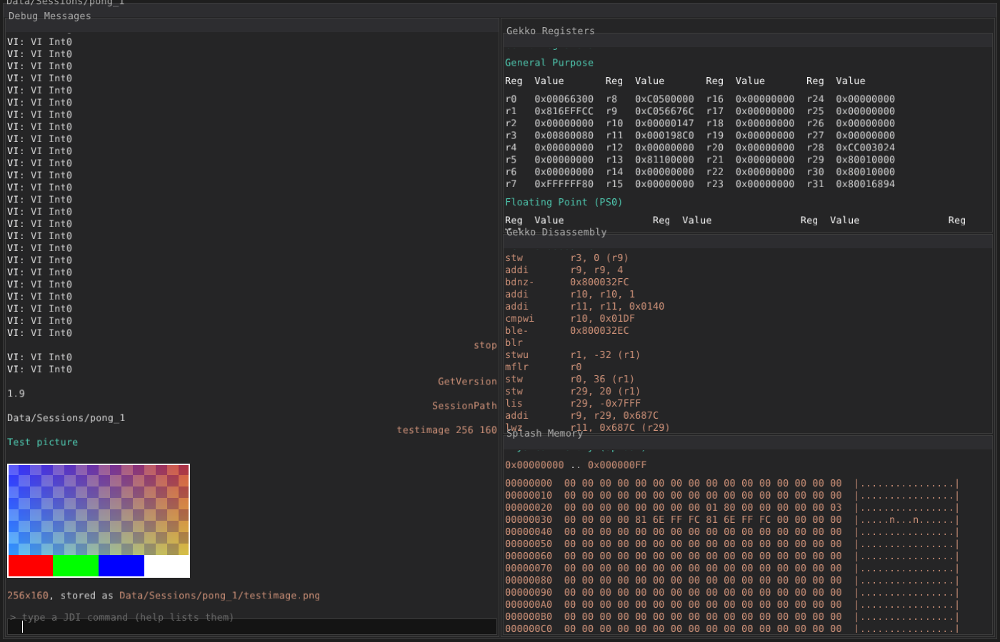
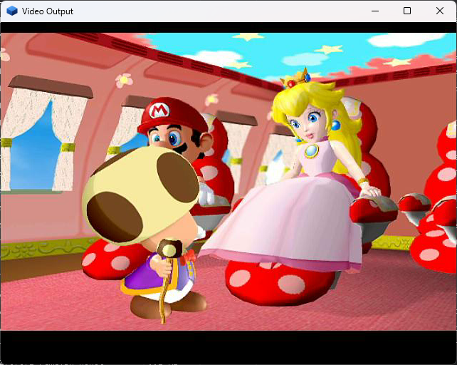
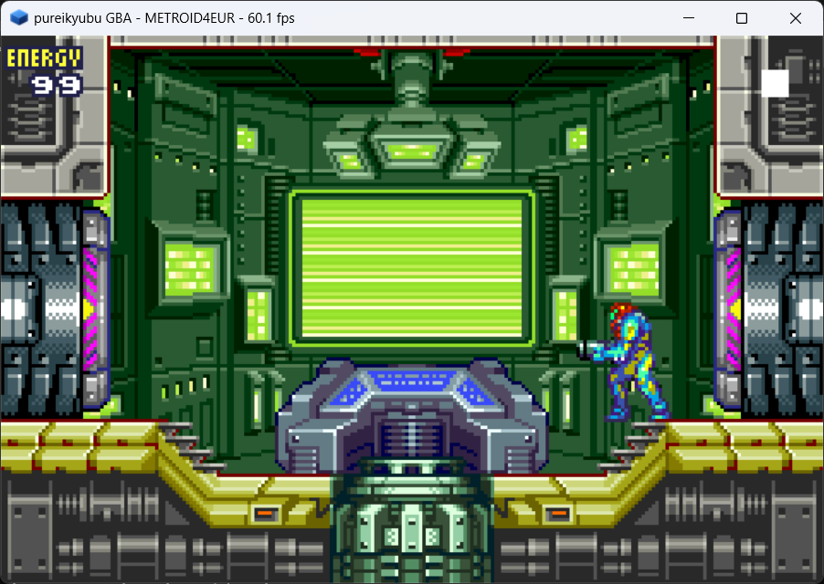
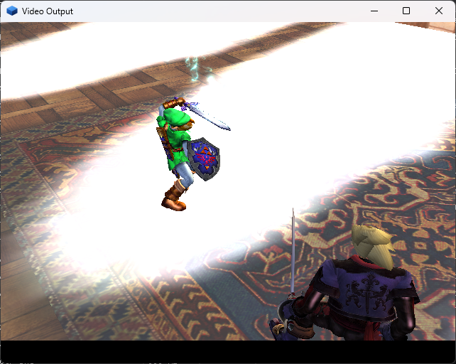

What is new
Release 2.0 is the peripheral release: the console's peripherals become one pool of devices — controllers, memory cards, the Broadband and Modem Adapters, the Game Boy Player and a Game Boy Advance on a link cable — with one window that configures them. Save states arrive for the GameCube side, the software GFX pipeline leaves its experimental status, and the interface gets eight themes, the Japanese titles of the selector and the two clocks of the emulation in its status bar.
One pool of devices
Every peripheral is a model of its own in src/peripherals.cpp: a controller,
a card, an adapter or a Game Boy Player plugged into a socket of the SI, EXI or Hi-Speed
bus, with its own settings and one property grid that draws them.
Broadband and Modem Adapters
The two adapters of serial port 1 are emulated from the console's side, command word by command word, and the shipped backend puts the Broadband Adapter's frames on UDP so two emulators share one emulated segment.
Game Boy Player and link cable
The Player is reached through the ARAM window it really lives in, and a Game Pak in its bay runs the same integrated Game Boy Advance. The link cable drives a Game Boy Advance on an SI socket the way a title does.
The whole console in a file
F5 and F7, ten slots, the File menu and the
savestate/loadstate commands. The portable machines keep their
own states, and a state loaded into a machine that has run on resumes the run.
Soft GFX, out of beta
The software pipeline is no longer experimental: it draws the boot ROM's splash and the movie players, honours the CP's BP write mask, and the titles it runs agree with the shader backend.
Themes, dump and clocks
Eight themes drawn from the site's palette, Japanese titles in the selector, text that is
one texel to one pixel, a video output window that follows its window — and
gfxdump, which keeps the last frames of the graphics command stream.
Screenshots
Captured from the current development build (release 2.0 line).





Build it
Windows
Open scripts/VS2026/pureikyubu.sln in Visual Studio 2026 and press Build.
Debug and Release configurations exist for both the Win32 and the SDL front end.
Linux
CMake + SDL2 build, verified under WSL2 as well:
sudo apt install libglew-dev
git clone https://github.com/emu-russia/pureikyubu.git
cd pureikyubu && git submodule update --init
cd build && cmake .. && make
./pureikyubu pong.dolThe software GFX pipeline
The Flipper graphics subsystem now has a second rendering path: a software (CPU) implementation
of the same hardware blocks, written from the GameCube specifications, switchable on the fly
through the GFX_PIPELINE configuration variable and drawing through a real EFB
memory array whose copy-engine output (the XFB) the video interface scans out.
Read the page · По-русски · Wiki · Issue #384
The MCP server
The emulator can run as a local MCP (Model Context Protocol) server: an LLM agent starts it as its own child process and drives the whole debug interface through it — every command of the emulator becomes a tool. Load a disc image, read the Gekko registers, dump main memory, watch the hardware counters, take a screenshot.
{
"mcpServers": {
"pureikyubu": { "command": "pureikyubu_headless", "args": ["--mcp"] }
}
}Read the page · По-русски · Wiki · Issue #383
Up next
The peripherals are not finished, and the next release is where they are finished: the top half of the network stack behind the Broadband Adapter, the Game Boy Player's own firmware and the frame stream it feeds, the multi-boot transfer the link cable still needs, and the Game Boy Advance of a Player or a link device travelling in a GameCube save state.
After that the project moves into its steady state: planned, methodical improvement — performance work and bug fixing release after release, rather than another feature push. The architecture is in place; what remains is making what is there faster, more exact and more complete. The details are in the 2.0 release notes.
Documentation
Release Notes 2.0
English release notes · Заметки о релизе на русском · Markdown
Digest since 1.6
Wiki
Emulator internals: Flipper, GFX, Gekko, Debug UI and the DSP IROM analysis.
Archive
Earlier releases, kept for reference.
Release Notes 1.9.1
English release notes · Заметки о релизе на русском · Markdown
Release Notes 1.9
English release notes · Заметки о релизе на русском · Markdown
Release Notes 1.8
English release notes · Заметки о релизе на русском · Markdown
Release Notes 1.7
English release notes · Заметки о релизе на русском · Markdown